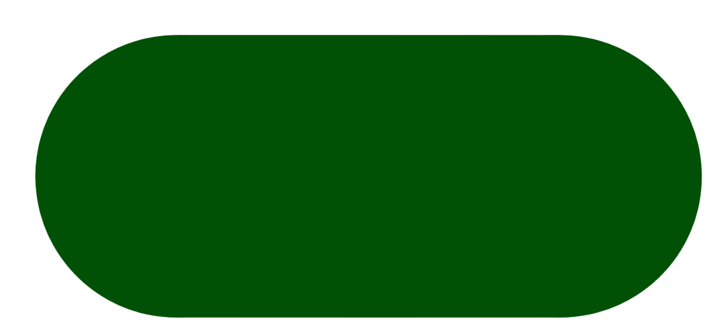

Особенности сортировки в других странах

Германия
Германия считается самым педантичным государством в мире. Во многом это касается и сбора мусора. В рекламе и сериалах мусорные боксы предстают перед зрителем в виде пластиковых контейнеров с различными надписями. Это не совсем так. В Германии точки сбора мусора можно разделить на следующие категории:
Квартальные точки сбора — это целый ряд из 10-12 емкостей с надписями. Боксы выполняют из стали, надписи делаются несмываемыми. В Германии производится сортировка стекла по цвету, картона, упаковочной бумаги, пустых бутылок и цветных салфеток.
- точки у дома;

-
квартальные баки для отходов;
-
точки у церквей и парковок;
-
точки в магазинах.
У дома, как правило, немцы держат всего три бака для следующих типов отходов:
В магазинах немцы сдают батарейки. Нередко в супермаркетах стоят аппараты, куда можно сдать бутылку или любые отходы с зеленой точкой. Так маркируют мусор, для которого существует технология переработки.